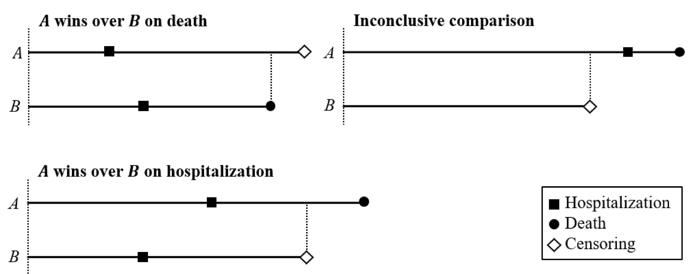
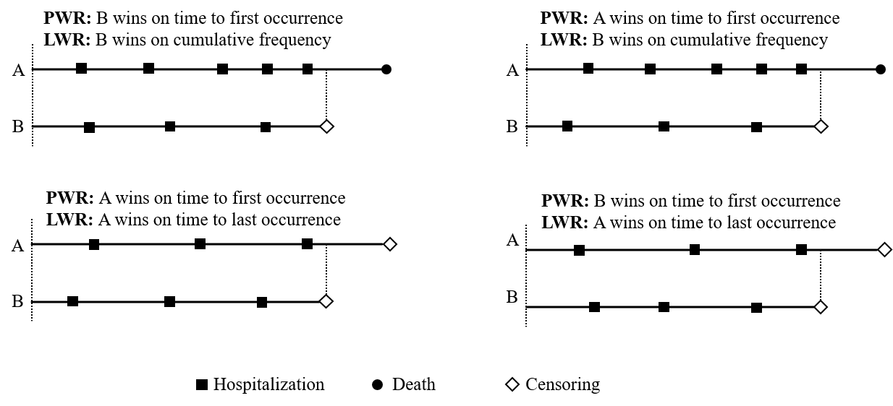
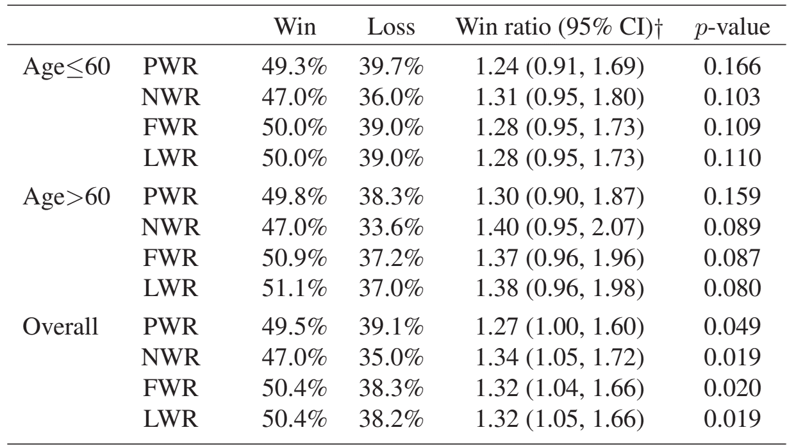
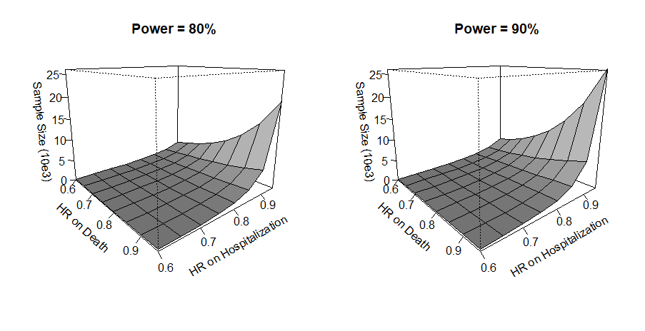

Chapter 2 - Hypothesis Testing
Department of Biostatistics & Medical Informatics
University of Wisconsin-Madison
Aug 3, 2024
WR package)WR package) \[\newcommand{\d}{{\rm d}}\] \[\newcommand{\T}{{\rm T}}\] \[\newcommand{\dd}{{\rm d}}\] \[\newcommand{\cc}{{\rm c}}\] \[\newcommand{\pr}{{\rm pr}}\] \[\newcommand{\var}{{\rm var}}\] \[\newcommand{\se}{{\rm se}}\] \[\newcommand{\indep}{\perp \!\!\! \perp}\] \[\newcommand{\Pn}{n^{-1}\sum_{i=1}^n}\] \[
\newcommand\mymathop[1]{\mathop{\operatorname{#1}}}
\] \[
\newcommand{\Ut}{{n \choose 2}^{-1}\sum_{i<j}\sum}
\] \[ \def\a{{(a)}} \def\b{{(1-a)}} \def\t{{(1)}} \def\c{{(0)}} \def\d{{\rm d}} \def\T{{\rm T}} \def\bs{\boldsymbol}
\]
Weighting
Stratification
Time frame of comparison: \([0, t]\) \[\mathcal W(\mathcal H^{*{(a)}}, \mathcal H^{*{(1-a)}})(t) =I\left\{\mathcal H^{*{(a)}}(t) \mbox{ is more favorable than } \mathcal H^{*{(1-a)}}(t)\right\}\]
Basic requirements
Interpretations
First/Last-event fewer ties than standard WR
First/Last-event \(\to\) Pocock’s WR with nonrecurrent event
Last-event: longer-term endpoint (recommended)
Exercise
Write out the win function \(\mathcal W\) for the three versions of recurrent-event WR.

WR package
WR::WRrec()ID: unique patient identifier; time: event times; status: event types (1: death; 2: recurrent events; 0: censoring); trt: binary treatment; strata: strata variablenaive = TRUE: calculates naive/FWR as well as LWRWRrec
obj$log.WR: log-LWR; obj$se: \(\hat\se(\mbox{log-LWR})\)print(obj) to print summary resultsHigh-risk subset \((n=426)\)
age60: indicator of age \(\geq\) 60 yrslibrary(WR)
##### Read in HF-ACTION DATA########
# same as rmt::hfaction used in chap 1
# (except for status coding)
data(hfaction_cpx9)
hfaction <- hfaction_cpx9
head(hfaction)
# patid time status trt_ab age60
#> 1 HFACT00001 7.2459016 2 0 1
#> 2 HFACT00001 12.5573770 0 0 1
#> 3 HFACT00002 0.7540984 2 0 1
#> 4 HFACT00002 4.2950820 2 0 1
#> 5 HFACT00002 4.7540984 2 0 1
#> 6 HFACT00002 45.9016393 0 0 1| Usual care (N = 221) | Exercise training (N = 205) | ||
|---|---|---|---|
| Age | ≤ 60 years | 122 (55.2%) | 128 (62.4%) |
| > 60 years | 99 (44.8%) | 77 (37.6%) | |
| Follow-up | (months) | 28.6 (18.4, 39.3) | 27.6 (19, 40.2) |
| Death | 57 (25.8%) | 36 (17.6%) | |
| Hospitalizations | 0 | 51 (23.1%) | 60 (29.3%) |
| 1-3 | 114 (51.6%) | 102 (49.8%) | |
| 4-10 | 49 (22.2%) | 39 (19%) | |
| >10 | 7 (3.2%) | 4 (2%) |
Naive (NWR), first-event (FWR), LWR
obj
#> N Rec. Event Death Med. Follow-up
#> Control 221 571 57 28.62295
#> Treatment 205 451 36 27.57377
#>
#> WR analyses:
#> Win prob Loss prob WR (95% CI)* p-value
#> LWR 50.4% 38.2% 1.32 (1.05, 1.66) 0.0189
#> FWR 50.4% 38.3% 1.32 (1.04, 1.66) 0.0202
#> NWR 47% 35% 1.34 (1.05, 1.72) 0.0193
#> -----
#> *Note: The scale of WR depends on censoring distribution.
WR::base(lambda_D,lambda_H,kappa,tau_c,tau,lambda_L)Baseline outcome parameters \((\lambda_D,\lambda_H,\kappa)\)
WR::gumbel.est(id, time, status)Exercise: Under Gumbel-Hougaard copula
\(D^\c\sim\mbox{exponential}(\lambda_D)\)
\(\tilde T^\c = D^\c\wedge T_1^\c\sim\mbox{exponential}\left(\lambda_{CE}\right)\), where \(\lambda_{CE} = (\lambda_D^\kappa + \lambda_H^\kappa)^{1/\kappa}\)
Cause-specific hazard for \(T_1^\c\): \(\lambda_H^\#=\lambda_H^\kappa\lambda_{CE}^{1-\kappa}\)
Three parameters \(\to\) three estimable quantities
Design parameters \((\tau_c,\tau,\lambda_L)\)
WR::WRSS()Basic steps
xi: log-HRs \(\xi=(\xi_D, \xi_H)^T\) (e.g., \(\log (0.8, 0.9)^\T\))hfaction# get training arm data
pilot <- hfaction |>
filter(trt_ab == 1)
head(pilot)
#> patid time status trt_ab age60
#> HFACT00007 3.47541 2 1 1
#> HFACT00007 21.60656 2 1 1
#> HFACT00007 29.04918 2 1 1
#> HFACT00007 32.16393 2 1 1
#> HFACT00007 34.88525 1 1 1
#> HFACT00035 48.88525 0 1 1
# number of subjects
pilot |> distinct(patid) |>
count()
#> n
#> 205# Step 1: estimate (lambda_D, lambda_H, kappa) from HF-ACTION data
outcome_base <- gumbel.est(pilot$patid, pilot$time / 12, pilot$status)
lambda_D <- outcome_base$lambda_D
lambda_H <- outcome_base$lambda_H
kappa <- outcome_base$kappa
lambda_D
#> [1] 0.07307293
lambda_H
#> 1] 0.5596186
kappa
#> [1] 1.564485
## Kendall's rank correlation
1 - 1/kappa
#> [1] 0.360812# set design parameters
tau_b <- 3
tau <- 4
lambda_L <- 0.001
# Step 2: use base() function to compute zeta2 and delta
set.seed(1234) # Monte-Carlo integration in base()
bparam <- base(lambda_D, lambda_H, kappa, tau_b, tau, lambda_L)
# Step 3: compute sample size under HRs 0.8 and 0.9
obj <- WRSS(xi = log(c(0.9, 0.8)), bparam = bparam, q = 0.5, alpha = 0.05,
power = 0.8)
obj$n
#> [1] 1240.958
WR::WRrec(ID, time, status, trt, strata)WR::gumbel.est(id, time, status)WR::base()WR::WRSS()